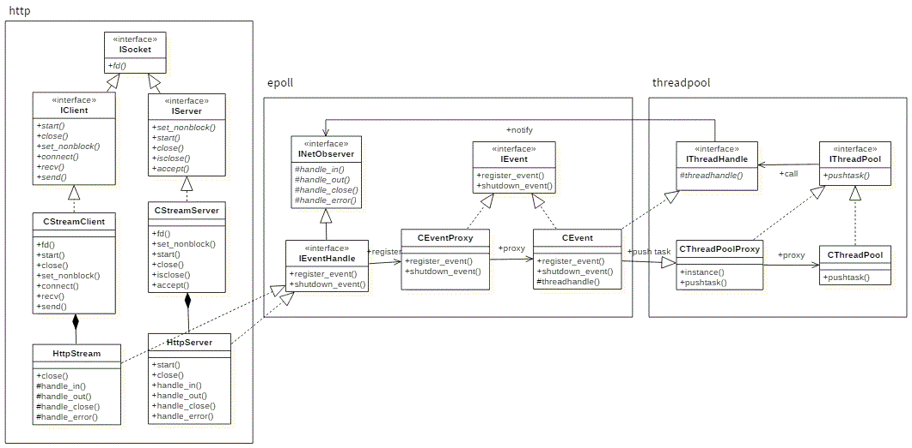

序言
编写这么一个c++的http服务器，纯粹是满足多年前一个好奇心。为什么我输入链接可以打开一个网页？这背后究竟发生了什么?所以本着好事多磨的心理一点点从零写了这个http服务器。他有着以下几个特点:
- 基于epoll的异步事件驱动框架
- L/F线程池处理网络事件
- 完全从零编写http服务模块
编写这么一个c++的http服务器，纯粹是满足多年前一个好奇心。为什么我输入链接可以打开一个网页？这背后究竟发生了什么?所以本着好事多磨的心理一点点从零写了这个http服务器。他有着以下几个特点:
两个TCP类型的套接字类CStreamServer与CStreamClient。以组合的方式扩展出两个http套接字类HttpServer与 HttpClient。Epoll事件监测设计为观察者模式，http套接字类创建后注册到Epoll事件监测中,当检测到事件时Epoll将向线程池中 提交任务。线程池将执行通知回调相应套接字的handle_xxx接口的任务。
